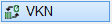
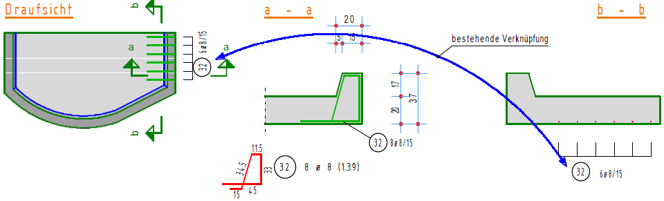

")
")
Sie können Verlegungen, die dieselbe Bewehrung in unterschiedlichen Formen darstellen, miteinander verknüpfen, so dass eine Änderung an einer Darstellung automatisch auf die andere übertragen wird. Das verringert nicht nur die Bearbeitungszeit, sondern erhöht auch die Sicherheit.
Siehe auch: Verlegung im Verknüpfungsmodus.
Beispiel:
Verknüpfungen können bei der Verlegung oder nachträglich hergestellt werden. Im nachfolgenden Beispiel ist der Schnitt a - a noch nicht mit der Draufsicht verknüpft. Der Schnitt b - b aber schon.
 |
||
Verlegefaktor der Staffel = 0 |
Die Anzahl 8 Ø 8 weicht von der Draufsicht ab! 6 Ø 8 |
Die Anzahl stimmt mit der Draufsicht überein. |

§Wählen Sie unter der Abfrage Welche die Option . §Klicken Sie die erste von zwei Verlegungen mit identischer Positionsnummer an, die miteinander verknüpft werden sollen. [Welche]. Die Verlegegruppe wird inkl. der Positionierung farbig markiert. Wenn Sie beim Anklicken kein Element der Verlegung getroffen haben, werden Sie darüber informiert. Klicken Sie in diesem Fall die rechte Maustaste, um zum Anfang zurückzukehren. §Klicken Sie die zweite Verlegegruppe an. [(mit) welcher?]. –Beide Gruppen werden farbig markiert. Bestehen schon mit anderen Verlegungen Verknüpfungen, werden auch diese markiert. –Stellt das Programm fest, dass in beiden Verlegungen unterschiedliche Angaben vorliegen, haben Sie die Möglichkeit, in dem folgenden Dialog die Parameter anzupassen.
§Bestätigen Sie die Verknüpfung mit Rechtsklick. [Ergebnis]. Falls keine Parameter angepasst werden müssen, wird die Verknüpfung sofort erstellt und das Ergebnis ausgegeben: "Die markierten Gruppen sind jetzt verknüpft". Die Anzahl am Formauszug enthält nur einmal den Verlegefaktor. Beispiel:
|
|||||||
")
§Wählen Sie unter der Abfrage Welche die Option . §Klicken Sie eine verknüpfte Verlegegruppe an. [Gruppe]. Alle mit dieser Verlegung verknüpften Gruppen werden markiert. §Bestätigen Sie das Ergebnis „Die Verknüpfung der markierten Gruppe wurde aufgehoben.“ mit Rechtsklick. [Ergebnis]. Beispiele:
|
||||||||||||
§Wählen Sie unter der Abfrage Welche die Option . §Klicken Sie eine Verlegegruppe an, von der Sie wissen möchten, mit welchen anderen Verlegungen Verknüpfungen bestehen. [Gruppe]. Alle mit dieser Verlegung verknüpften Bewehrungen werden markiert. §Bestätigen Sie das Ergebnis „Die markierten n Gruppen sind verknüpft.“ mit Rechtsklick. [Ergebnis]. |